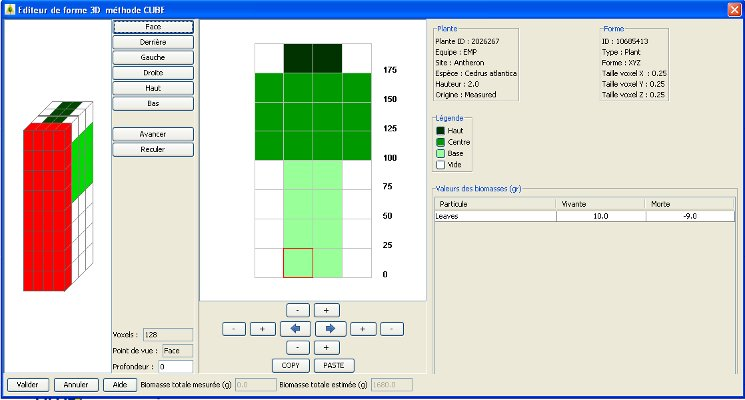

start => help_fr => fireparadox
Cette interface permet la saisie de la répartition des différents type de cubes (ou voxels) dans une forme en 3 dimensions.
Les types de cubes possibles sont HAUT/CENTRE/BASE.

LEGENDES
En haut à droite, 2 encadrés rappellent les informations concernant la plante (ID, équipe, site, espèce, hauteur, origine) et la forme en cours de saisie (ID, type d'échantillon, type de forme (XYZ=3D), dimension des voxels)
En dessous apparait la légende des couleurs des différents types de cube HAUT/CENTRE/BASE
INITIALISATION
Si cette forme 3D est créée à partir d'un échantillon ou d'une forme 2D, alors les cubes de cet échantillon ou de cette forme seront positionnés par défaut au centre de la forme 3D.
CHOIX D'UN TYPE DE CUBE
Le choix d'un type de cube à répartir dans la forme s'effectue en cliquant sur les carrés de couleur dans la légende des différents types de cube HAUT/CENTRE/BASE. Le type de cube sélectionné pour la répartition ainsi que son nom apparaissent alors en rouge.
Un cube vide de couleur BLANCHE permet de positionner des “trous” dans le houppier.
Dans la partie droite de l'écran, la liste des particules pour le type de cube sélectionné, avec les biomasses vivantes et mortes apparaissent sous forme de table dont les valeurs sont non modifiables. Ces biomasses sont exprimées en grammes.
Dans la partie gauche de l'écran, la forme 3D est représentée afin de l'espace.
Les boutons Face/Derrière/Gauche/droite/Haut/Bas permettent d'effectuer des rotations de la forme 3D sans toutes les directions.
Les boutons Avancer/Reculer permettent de changer de transect en avant ou en arrière.
Quelle que soit l'action effectuée, le transect sélectionné apparait alors coloré en rouge et ses voxels s'affichent dans la partie centrale pour en permettre la mise à jour.
Dans la partie centrale de l'écran, la grille des voxels du transect sélectionné à gauche est représentée.
Un clic gauche sur un voxel permet de positionner le type sélectionné dans la légende. Le voxel dans la grille apparait alors dans la couleur correspondante. Les biomasses de ce type seront alors affectés à ce voxel dans la base de données.
Il est possible d'affecter le même type à plusieurs voxels en même temps en dessinant un rectangle de sélection avec le clic droit de la souris.
Il est possible de zoomer en dessinant un rectangle de sélection avec le clic gauche de la souris. Un clic droit permet de revenir en arrière sur le zoom.
Les boutons + et - permettent d'agrandir ou de réduire la grille dans les 4 dimensions.
 Les 2 flèches bleues permettent de copier tous les voxels à droite ou à gauche, symétriquement selon l'axe des Z
Les 2 flèches bleues permettent de copier tous les voxels à droite ou à gauche, symétriquement selon l'axe des Z
 Les boutons COPY/PASTE permettent de copier/coller tous les cubes d'une face 2D vers une autre.
Les boutons COPY/PASTE permettent de copier/coller tous les cubes d'une face 2D vers une autre.
MODIFICATION DES BIOMASSES
Il n'est pas possible dans cette interface de modifier des valeurs de biomasses ou d'ajouter une nouvelle famille de particule.
Pour cela, il faut revenir en modification sur l'échantillon qui a servi à construire cette forme.
CUMUL DES BIOMASSES
En bas de l'écran, la biomasse totale estimée est recalculée automatiquement au fur et à mesure des saisie.
La biomasse totale mesurée au moment du relevé de terrain est affiché pour contrôle.
VALIDATION
Pour sauvegarder la nouvelle forme dans la base ou valider les modifications effectuées sur la répartition des voxels, cliquez sur Valider.
Tous les voxels vides à gauche et en haut de chaque transect ne seront pas sauvegardés.
De même si le dernier transect en profondeur est laissé vide, il ne sera pas sauvegardé.
La taille de la forme s'ajustera automatiquement.